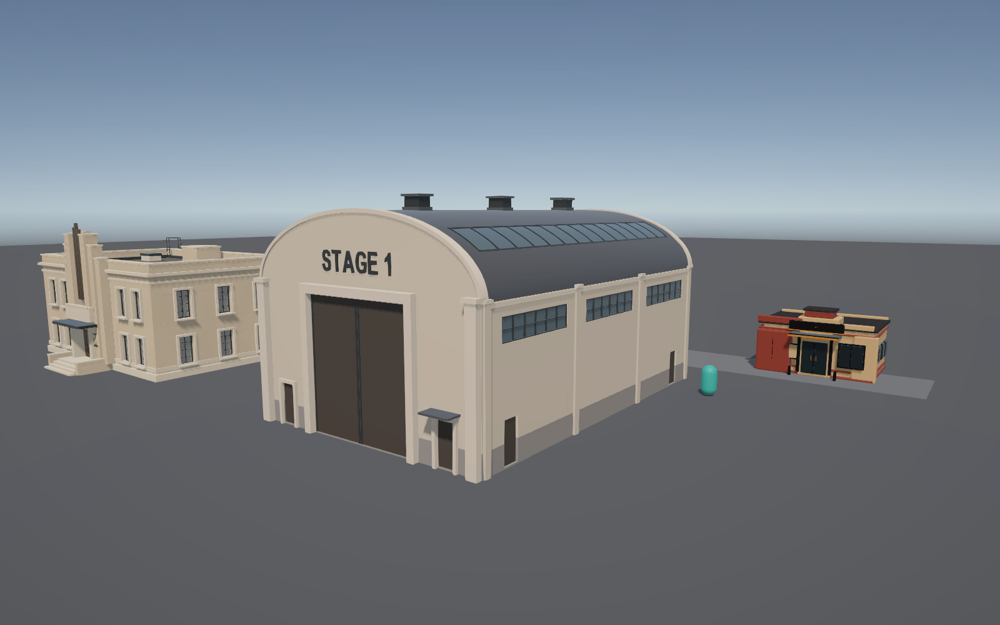
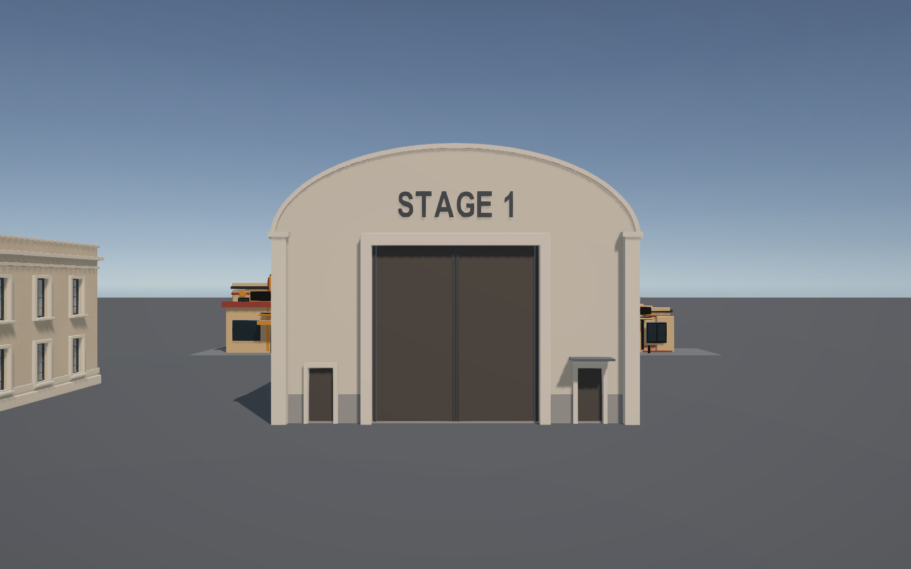
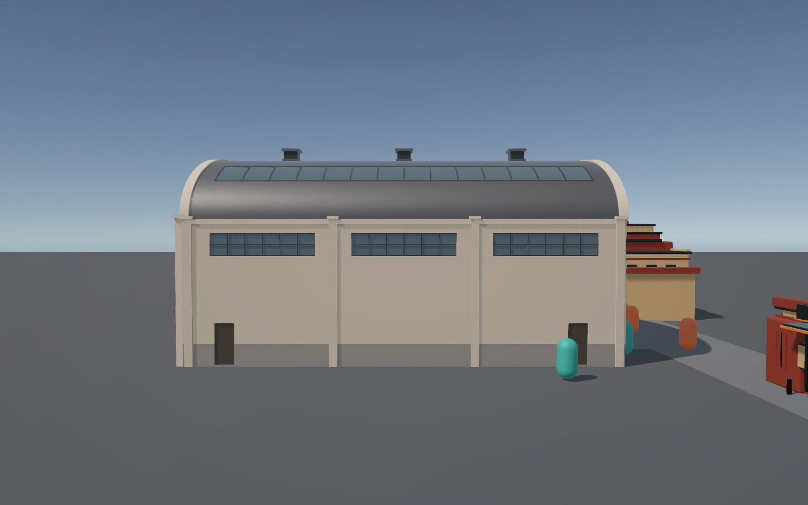
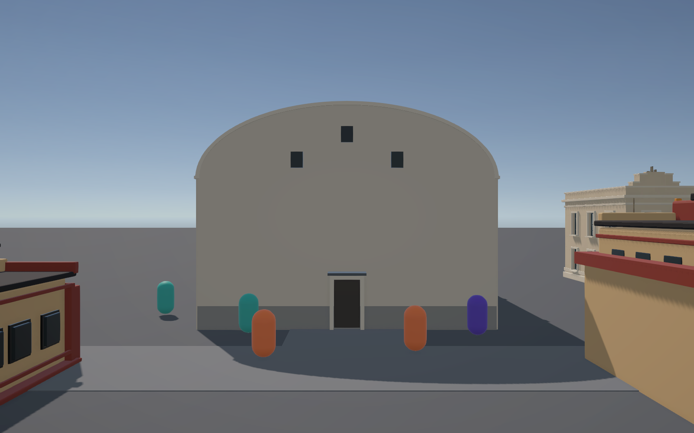
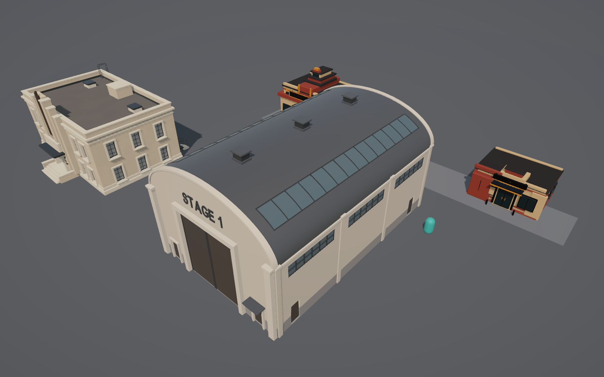
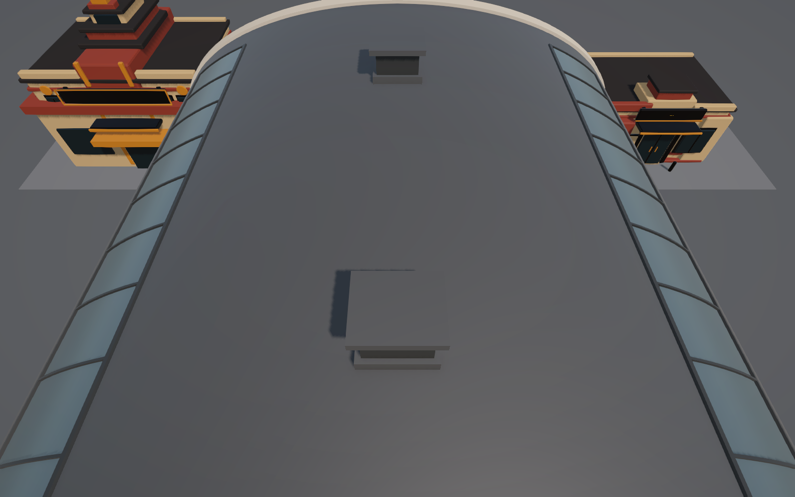
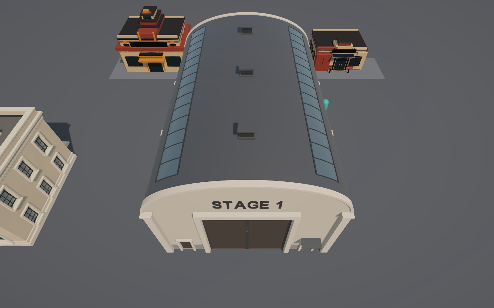
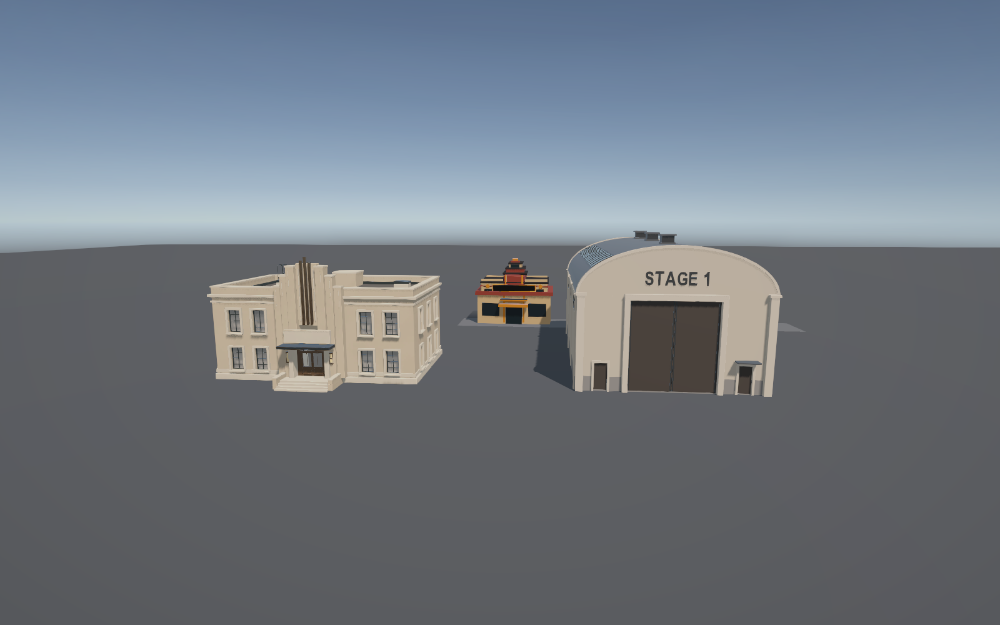
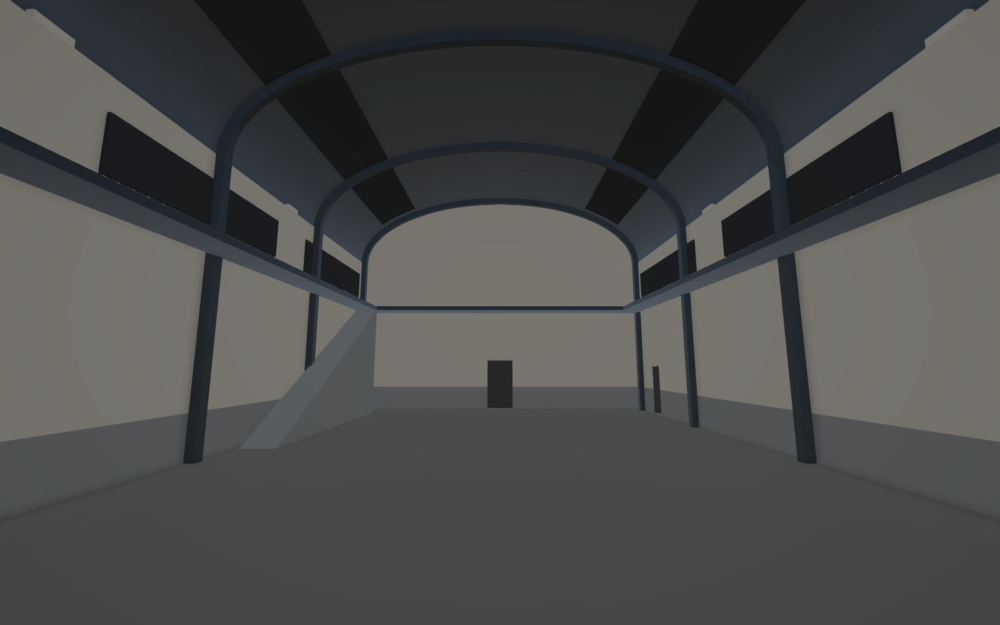

Front three-quarter


Straight front


Side


Rear


Roof and silhouette


Original management pose


Management view, panned


Beside Administration


Interior volume


Full approved concept